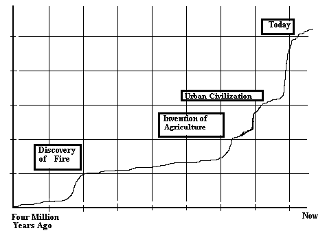

|
|
Search |
Published in:
In 1543 Copernicus, a Catholic priest, produced a mathematical paper disproving the crystal sphere theories of Ptolemy that had held sway for hundreds of years. Ptolemy's theory of how the heavens worked held that the Earth was the center of the universe. The church held fast to the teachings of Ptolemy but, quietly, used Copernicus' theories because they produced a more accurate measure of time.
In 1609 Galileo, using a telescope, loudly proclaimed that Copernicus was right and the proof was there for all to see. The church accused him of "vehement suspicion of heresy", locked him up, and banned his books. It took about four hundred years for the church to forgive him.
The question arises as to just why the church should care if an old theory is proven incorrect? At the time the church backed the world view of Aristotle, a Greek philosopher of great wisdom, who lived in about 350 BC and had, undoubtedly, never heard of the Catholic church let alone being a believer!
In the eighteen hundreds Darwin proposed a theory of evolution that stated that all forms of life evolved from lower forms over eons of time. Churches of every variety are still fighting this one. The theory of evolution is no longer a theory. It is a fact that is observable in both the fossil record and the genetic record both of creatures now extinct and in living people today. One day the churches will have to give up the idea that they are the only purveyors of truth and realize that the truths of two thousand years ago are not quite good enough for today.
Humanity has a strong need for, and driving curiosity about, explanations of where we came from, where we are going, and what the world around us is really about. The world as discovered by science is far more wonderful, amazing, and incredible than the wildest of religious philosopher could ever have imagined. As incredible as it is, it's provable and observable.
The real conflict is between the forces of belief and the forces of knowledge. There should be no conflict here. Both belief and knowledge are useful for humanity but the territory of both is different.
The field of belief belongs to religion and philosophy and is useful by the human brain. When a person believes in something strongly enough, no matter how impossible it seems, very often one can find a way of making it happen. Many, if not most, of humanities great forward strides came because someone first believed in it. Religion can give meaning, purpose and direction to life. It is not the only thing that can do so. Members of Technocracy Inc. most certainly know something about a life of meaning and purpose.
Religion has ceded much of the territory it should rightfully occupy to others by, in effect, shouting at the sun not to rise in the morning. In trying to hold back new knowledge, religious institutions often generate great hatred and fear trying to defend their territory. But if one goes back to the great thinkers who founded these religions, it seems unlikely that they would support such behavior. Things that are subject to factual verification are not proper subjects for religion. Study of humanity's past indicates that technological advance was followed by advances in human mental development. Today one must admit that it is badly needed. Much of this need is being approached by what is referred to as the self help movement.
The work done by people in this area is nearly exclusively empirical (whatever works). There are many authors and books in this area. The book stores are full of them. They discuss anything that people might want to change in their lives. They all have one major goal - to improve the performance of one's self so as to gain greater satisfaction with one's self, or in other words, greater self actualization. Tony Robbins discusses personal power (control of one's behavior patterns). Edward De Bono discusses how to improve your capability to think clearly and creatively. Also, see Peak Learning by Ronald Gross. From this it is clear that improving human performance and more fully utilizing the capacities of the human brain has become a priority for many.
The human race has not been on the Earth for a very long time:
| Universe: | 16,000,000,000 years |
| Earth: | 4,500,000,000 years |
| Dinosaurs: | 165,000,000 years |
| Human Race: | 4,000,000 years |
| Modern Humans: | 100,000 years |
| All of Recorded History: | 7,000 years |
The human brain has a right and left hemisphere. The left brain controls language, logical thinking, sequential events and so forth. The right controls what are generally regarded as creative talents, art, music and so forth. The division between the two is not rigid. Each side is capable of doing things that the other usually does but they are best at what they are specialized to do.
The story of early humans is still far from unraveled but one of the early sub-species of modern humans is referred to as Cro-Magnon. They had larger brains than modern humans! This being the case, why did they disappear? They left behind beautiful works of art on the cave walls in southern France. The art work was so sophisticated that many art critics refused to believe that it was done by prehistoric humans. Is it possible that these people were so right brained that they had difficulty developing and using language?
Learning a language is one of the most important functions of the human brain. It appears that if a person does not learn a language of some kind by a certain age they become something less than fully human. Language, both written and spoken, has created a whole new kind of evolution - cultural. Humanity can accumulate knowledge and pass it on to the next generation. While some other species have some ability to learn (most mammals learn from their parents), nowhere does it exist in anything like the extent in human beings. Human beings regularly learn powerful methods of manipulating symbols from people who lived long ago.
At every stage of human development the species became better adapted to live in a wider variety of conditions and climates by making intelligent use of the materials in his environment. With the development of modern humans the race spread to every habitable corner of the globe. In most areas man became a hunter of large herbivores, quite probably driving many of them extinct (Self Made Man by Kingdon). Mans' lack of concern for his environment is not a new thing. But at that time he could just move somewhere else, away from the problems he created. Or he could change his taste and choice of food. This approach is proving not possible with the world full of people and food everywhere in danger.
The development of agriculture, most likely by women, was a response to population pressures or changing climatic conditions that could no longer be ignored. This occurred probably about 10,000 years ago. This most certainly rates as one of humanities great breakthroughs. Humanity no longer had to scrounge for food since they could grow not only what they needed but what they wanted. If they had a surplus it could be stored, or traded for other goods. It forced them to build better housing, leading eventually to cities.
Some seven thousand years ago humans invented what is sometimes called Urban civilization (Man Makes Himself by V. Gordon Childe). During a short period of only about five hundred years virtually all the trappings of our modern civilization were invented. Nearly all the forms of social organization we are familiar with today were invented. Knowledge of ceramics, metals, mathematics, written language was developed or consolidated.
This development increased humanities share of the resources still further and resulted in the development of an organized priesthood, military, and social administration. These forces put a stop to the innovation that was occurring. Change threatens the social order and the established social structures. This is at the heart of the dilemma that we face today. The real problem for the social structure is that one of the things that has been institutionalized is change and innovation!
It was at this time that money was invented. This was a useful tool. Money is a symbol that stands for wealth. Rather than having to deal with the actual wealth (pigs, chicken, gem stones, wheat) they could carry one item that stood for wealth in general. This was a very big step. Wealth became portable and easily convertible into any kind of commodity.
Then the symbol, the tool, became a commodity itself. This happened the first time someone allowed another person to use his wealth for some other purpose and charged him money for the amount of time it was used - interest. Then the acquisition of money became an end in itself. Money became the motivation for human behavior. When money is the motivation for doing something, a persons behavior frequently becomes incomprehensibly dangerous because they are responding only to a symbol and not physical information. Why else would a government pay farmers not to grow food when people are starving? How many unnecessary, wasteful, destructive projects have been constructed to provide jobs? Why do food producers load the food we eat with fat and salt when the negative health impacts on the population is well known? Could it be to make more money?
Each change in social state brings an increase in population density. All these population increases were preceded by technological innovations. The invention of agriculture accompanied a large increase which also required a new social structure. The inventions leading to urban civilization resulted in another large increase followed by an entirely new social structure. The technological developments of the last two or three hundred years have been nothing short of amazing and the pace of change continues to increase. Not only has the population increased dramatically but so has the standard of living. It most certainly follows that we will not escape an equally massive social change. This will be one of the greatest challenges for survival the human race has ever faced.

When the Europeans came to North America they discovered a land that they regarded as essentially uninhabited. This is an apparently typical response from people living at a higher level of social organization when moving into a territory inhabited by people at a lower level. People living at a higher level of social organization are, due to their mastery of the required technologies, able to divert a higher fraction of the available energy from the environment to their own uses. At every point that humanity has achieved a new level of technology the population density has increased and a new level of social organization was required. Our current social organization has been with us for some seven thousand years.
The coming social evolution will be a major test of the ability of the human race to survive. That test is now coming to a head on the North American Continent and the prospects do not appear promising. The forces arrayed against any kind of social change (except a reversion to unworkable fascism) own and control all the mass media of communications, the economic structure, and the government.
In 1949 George Orwell wrote a novel titled "1984" . It was a chilling novel about a future world order completely without hope. The Ministry of Truth was engaged in rewriting history as it happened so that the truth never reached the populace. Cameras watched everyone and anyone who showed any behavior the system did not approve of was eliminated. Essentially this is what we have today, an Orwellian Democracy.
The, so called, democratic governments have been relegated to little more than a hollow farce. A small wealthy oligarchy can simply buy off the government and most people have no real idea of what is really happening and most don't care as long as they are not getting stepped on. The fact that the government is being bought off occurs in so subtle a manner that even those who are part of it don't realize that it is happening.
People vote for a candidate because he sounds sincere and quite possibly he really is. He goes to congress and proposes very idealistic legislation. Everyone is impressed. Shortly thereafter he is visited by a numbers of people (many high paid lawyers, maybe even old friends) who have some very persuasive arguments as to why his wonderful legislation should be altered - just a little bit. Then others in congress come to him and say that if he really wants his bill passed he will have to change it a little more. As the process proceeds the bill looks less and less like anything of real value to the people it was intended for. But finally the bill passes. He tells his constituents - well, at least it's a start.
Now it is the turn of the governmental apparatus to interpret what the bill really means and how it will be enforced. Now his wonderful legislation has become a weapon against the very people it was initially supposed to help. Some people wonder why participation in voting has declined so much. Many people have learned how much it really matters. Others vote because they are afraid the bad guys will take over. Technocracy Inc. has some bad news for those of you who are afraid of the bad guys. They are in charge.
Of course one can back this up a little further and take a look at that great sounding, sincere, honest person running for office. Occasionally a real maverick ( translate someone who really is interested in the welfare of his constituents) does get elected. The system will glowingly point to these rare commodities as wonderful examples of how free our system is. The survival chances of anyone who is sincerely not interested primarily in his own interests either getting or staying in office without the "big money" very long are slim indeed.
The mass media of communications are owned and controlled by the wealthy oligarchy. They do not directly control what goes out over the air, they don't have to. They hire the people who control the people who go out on the air. Anyone who does not have the proper point of view will never be hired. The mass media of communication in the United States is more tightly controlled than the censors of the old USSR could have ever dreamed (see Manufacturing Consent by Noam Chomsky or any of his many excellent books). The media seldom tell lies, although they will if they feel it is necessary, they just don't report what they don't want people to hear.
A major clue that the media is trying to cover up something occurs when the media begins to slander someone or something. Investigative writers who have become adept at digging out the really rotten secrets our government is trying to hide from its people are today referred to as "conspiracy theorists". Recently an investigation was concluded, many years after the fact, on the Iran - Contra cover-up conducted during the Reagan Administration. The conclusion reached was that the President should have been impeached. The media responded to this by launching a personal attack on those who did the investigation. The actual facts were not discussed very much.
Public relations firms that mostly work out of Washington DC offer to manufacture public opinion for sale to the highest bidder (see Flack Attack in the Utne Reader Jan.-Feb. 94). How many letters are sent to a congressman on any side of any issue depends on how much money one is willing to spend.
It is in this whirlpool of decay, disintegration, and a near total lack of any understanding of the forces impinging on their destiny that the people of North America face one of the greatest, if not the greatest, challenge ever presented to humanity. The continuing and accelerating application of energy and technology to the means of production continues the elimination of jobs in the economy. As technology forces the collapse of the price system few have the remotest idea not only of what is happening, or why, but where to go for information.
Humanity is now involved in a basic high school biology experiment. Conditions inside a small glass dish are made ideal for bacteria growth, plenty of food, ideal temperature and humidity. A small group of bacteria are introduced into the dish. The bacteria will multiply exponentially until the mass reaches the edge of the dish, consume all the food, and drowned in their own waste. With the price system social mode of control we now have that is where humanity is headed. Environmental scientists meeting in Wenatchee, Washington February 10, 1994 stated "some 34 percent of all fish species, 75 percent of the mussels and 65 percent of all crayfish species have become rare or extinct due to habitat degradation and other human causes. .... Commercial fish harvest are down by more than 80 percent from those of a few years ago." Humanity will reach a balance with the environment one way or the other. Our social system is driving us to extinction in the direction it is currently taking us.
Technocracy Inc. alone has an analysis of the conditions destroying the price system and where that will take us. The people of North America have a choice between total social breakdown and moving forward in what has to be described as the greatest step in human social evolution. The futility of any action that involves straightening out the current system should be obvious. Those that have the power favor the status quo even if it means a near guarantee that the human race will not survive.
The situation is certainly desperate but not entirely hopeless. People have banded together to form organizations to fight for causes they believe in. These organizations have learned to fight with the same tools as the oligarchy and even to invent a few of their own. The vision of such organizations is frequently narrow but that may contribute to some extent to their success. People would never have formed such organizations if they did not realize that governmental processes are hopelessly subverted. Nonetheless, virtually all of these organizations continue to work within the system and their basic premise is that we just need to be vigilant and that the system needs perfecting. This is a forlorn cause.
As humanity moves into the next century, universal education, a very recent innovation, becomes a given. New methods of improving and more fully utilizing our mental potential are being developed and exploited. Humanity is on the verge of being able to turn genes on and off. The capability of changing the genetic structure of the next generation is nearly within our grasp. The ability to change the genetic structure of people now living appears also to be close at had. Not only does humanity have control of cultural evolution but also of genetic.
The collapse of the price system, invented some seven thousand years ago, to deal with conditions far different from today, is inevitable. It is also desirable. Because unless humanity is permitted to supersede the twisted view that a price system forces on people, the chances of surviving the oncoming technology would also be slim. What sort of society would this have to be?
An old Chinese proverb states that government that governs best governs least. That is just what is being proposed by Technocracy Inc. The primary function of government in a price system is to protect property rights. Property rights are nothing more than a code of behavior that is dependent on a price system for existence. Without a price system property rights disappear. The only thing this really leaves for a social organization is to operate all the physical equipment we depend on for our lives. Some behavioral codes will still be needed. Traffic lights will still be needed. One could not move into anothers' home uninvited.
We need structure, some sort of organization, to operate industries and provide for lines of communication between suppliers and supplied. Technocracy Inc. proposed energy as the unit of measurement for social operations because it is the most fundamental measure of anything physical. It provides a feedback mechanism to operate the social order. That is say that when an item is purchased in a store the amount of energy required for its manufacture and transportation is recorded and reported to the warehouse it came from. The warehouse reports to the factory and a new item is produced. Recording the energy used also gives accurate information for analyzing the social structure to make it more efficient.
It is also necessary to devise a structure for dividing up the wealth of the area. A certain amount of the wealth must be re-invested to maintain the physical plant and equipment of the area roads, hospital, schools, factories, recreational facilities and so forth. The remainder is divided up between the inhabitants. When one divides up the wealth of the area among the inhabitants one must distribute the same amount of wealth, or at least consuming privileges, to each. To do otherwise is to re-establish a price system. Once we have moved beyond a price system going back to one would involve disenfanchisement of a large percentage of the population. Distinguishing between individuals will have to be on the basis of what you are and what you can do.
If problems of a continental nature surface, they would probably revolve around prioritizing how the wealth of the area is to be used. The environmental impact statement might very well serve as a good model for this. Setting up an interactive electronic forum for discussion of national priorities is now within our technological ability. Such an operation would be a true democracy not the fake republican governmental structure that exists today. When one does all these things one arrives at the governmental structure outlined by Technocracy Inc.
Technocracy Inc. invites the citizens of North America to become involved in one of humanities great forward movements to a new level of social existence. This movement, Technocracy Inc., would permit humanity to move forward into a future with hope of realistically achieving any goals we can envision.